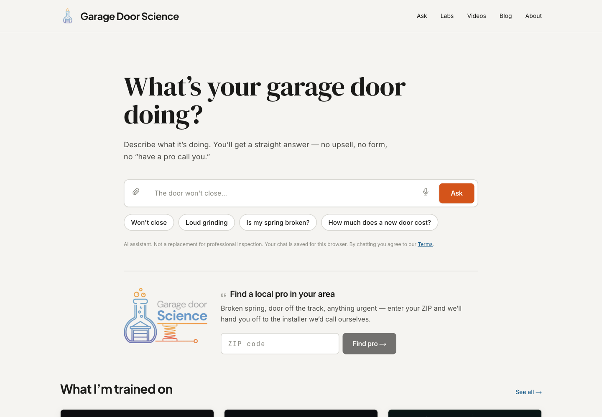
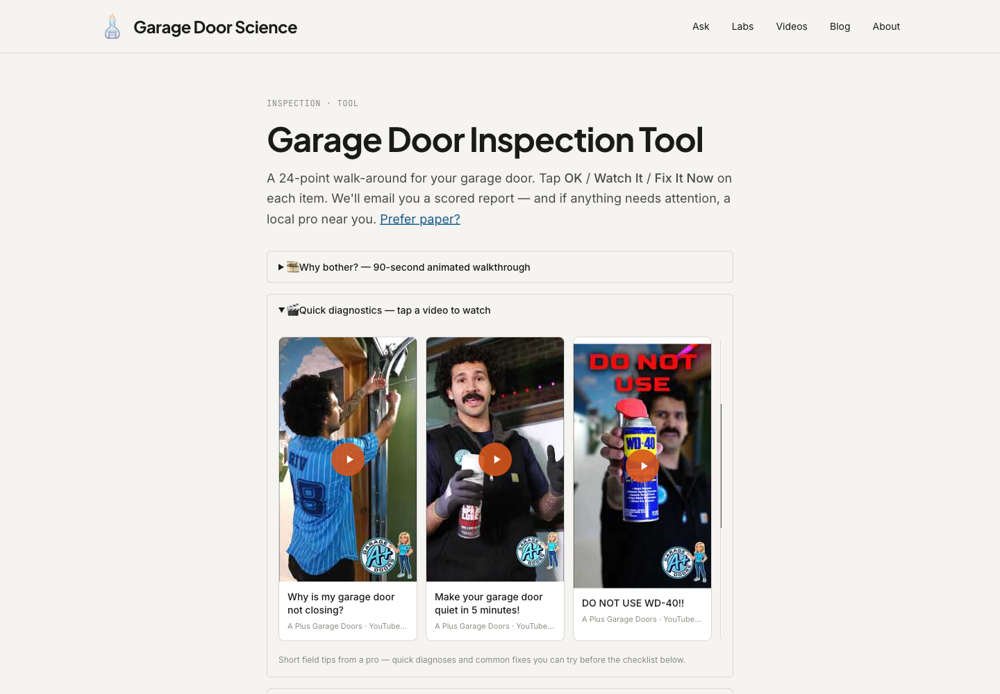
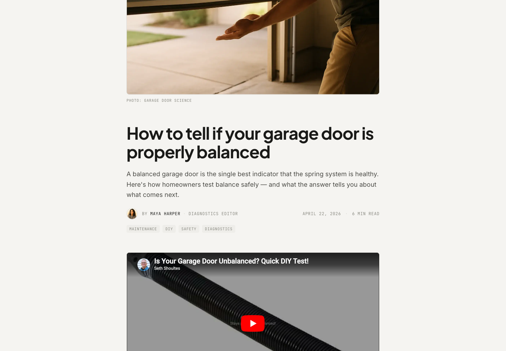
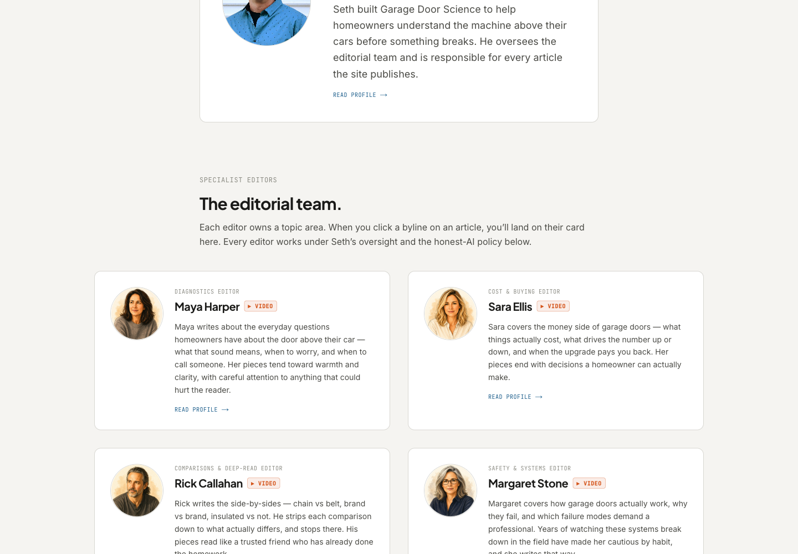
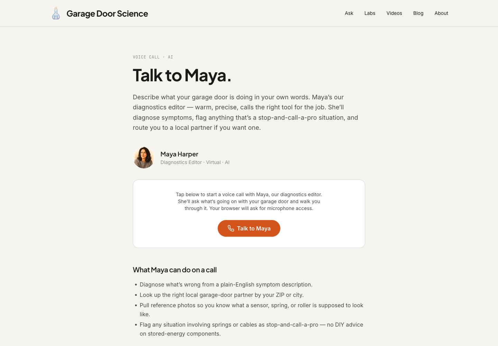

At 11pm on a Monday, a garage-door article I never wrote auto-published to the site. It cost thirty-five cents. The next morning, Google crawled it.
Come take a look at what it took to build that.
What garagedoorscience.com is, and why it exists
Every garage-door website on the internet is the same. A stock photo of a beige house. A phone number. A "get a free quote" form that goes to a call center. The homeowner who arrived there — let's say she typed "why won't my garage door close" into Google at 9pm — has already been through a dozen of those pages. She doesn't want a form. She wants someone to tell her what is actually wrong with her door.
That's the gap. garagedoorscience.com is built to fill it: an educational, diagnostic, and lead-routing site for homeowners. Ten interactive 3D labs that explain how a garage door actually works. A virtual technician who can hear her describe the problem, figure out what's likely wrong and what it would cost to fix, and connect her to a real local partner with a real phone number. A 24-point inspection she can walk through herself. Articles written by people who know the subject.
It's a conversation, not a form. And it is the reason I needed to build it differently than I'd built anything before.

Day 1: The skeleton that actually worked
Before I get to the four days, one prerequisite. I didn't start from zero. Ten interactive 3D labs already existed — the physics of torsion springs, a 3D anatomy of a garage door opener, the geometry of the sectional-door track. I'd built them in two weekend days a few weeks earlier, the kind of weekend project you do because you're curious and not because you're going anywhere with it. When they were done I looked at them and asked the only reasonable next question: what would it take to build a whole site around these? The answer ended up being the four days I'm about to describe. The labs were the seed.
On April 20th I had those labs, a design system, a placeholder diagnostic page, and no database. By midnight, there was a working product.
The shape of the thing was decided before the first line of code. The chat would have two layers: a Technician voice — warm, plain-spoken, diagnostic — backed by a second layer doing careful safety reasoning quietly, away from the user. The Technician talks like a knowledgeable friend. The hidden layer catches the cases where that friend should not be telling someone to replace their own torsion spring.
Here is the moment that told me it was real.
I typed: "My garage door opens fine but won't close all the way." It pulled from the alignment lab, diagnosed a sensor obstruction, gave me a cost range, and offered to find a nearby partner. No hallucination. The source, visible. The whole exchange in under two seconds.
That is not the same as appearing to work. That is working.
By the end of Day 1: a database with the ability to search across all ten labs and find the right passage in milliseconds. A diagnostic tree covering 8 symptoms and 17 likely causes, with cost and safety information for each. A function that could match any ZIP code to a local partner. A working chat interface. 65 commits.
Day 2: The explosion, and an identity decision
Day 2 had 111 commits. I know that sounds like a number I'm proud of. I'm not. It's evidence of what happens when the loop between idea and shipped code collapses.
If you walked in on Day 2, here's what you'd see forming: a second persona — a Lab Trainer who teaches from the interactive labs rather than diagnosing — and the ability for the two voices to pass a conversation back and forth depending on what the homeowner needed. A 24-point inspection tool with its own AI chat, tuned to whichever item you were looking at. A scheduling flow that opens a real booking calendar on your screen instead of dropping you onto a new page.
The inspection tool alone — scrollable checklist, one item open at a time, AI chat that knows your exact context, a full scored report at the end — would have taken a week to spec out a year ago.

But the most important thing that happened on Day 2 wasn't a feature. It was a decision.
I'd been maintaining a separate AI product for our partner, A Plus Garage Doors, under a different project. That product had the diagnostic logic, the location routing, the partner data. garagedoorscience.com had grown past it in two days. So I made the call: garagedoorscience.com is the primary platform now. The A Plus product is deprecated. All the partner data — location coverage, phone numbers, booking links — moved here. One source of truth.
That's not a refactor. That's an identity shift. The new site stopped being an experiment and became the thing.
New partners came in on the same day. A roofing-adjacent outfit in Oklahoma City. A regional door company covering Washington and Oregon. And the site's tools became callable by other applications — any piece of software that wanted to ask "who's the nearest garage-door partner to ZIP 84101" could now get a real answer, not a form.
Day 3: The day we stopped needing to write articles
On April 22nd I built an auto-content pipeline. This is the part worth looking at closely, because it's easy to mischaracterize.
The pipeline is not "AI writes articles and publishes them." It is: a research layer looks at what homeowners are searching for and where the site's knowledge gaps are. A draft forms. That draft runs through several rounds of review — first a full editorial pass, then a cut-and-tighten pass by Rick Callahan (one of the four AI-assisted editors on the site, focused on comparisons and getting to the point), then a fact-check by Margaret Stone.
Margaret covers safety and systems. She flags unsourced claims.
Margaret flagged three unsourced claims on the first run of the first article. Correctly. The draft was held. I sourced the claims, ran it again, Margaret passed it, and it published.
Total cost for that article, across both runs: approximately $0.35.

By end of day, seven auto-generated articles were live. The pipeline runs on a schedule: Sunday evenings for picking topics, Monday, Wednesday, and Friday nights for publishing. The week's content budget is roughly $2.50.
The editorial team has real profile pages. Seth Shoultes, Editor-in-Chief, human. Maya Harper, diagnostics editor. Sara Ellis, cost and buying. Rick Callahan, comparisons. Margaret Stone, safety and systems. Each with a bio, a portrait, and a byline on every article they touch. The AI-honesty disclosure is in the footer. We are not pretending.

The other thing that landed on Day 3 was the voice infrastructure — the plumbing for what was coming on Day 4.
Day 4: Maya answers the phone
On April 23rd, Maya Harper started answering calls.
/ask-maya is a live voice agent. She runs on a WebRTC connection — real-time, low latency, like a phone call — but she has access to every tool the site has. She can diagnose a door by symptom, find nearby partners by ZIP or city, pull up a partner's phone number, and open a booking calendar on your screen while she's still talking to you. Not describing it to you. Opening it.
I tested it by describing a garage door that would reverse every time it tried to close. Maya asked two follow-up questions, identified likely sensor misalignment as the primary issue, gave me the cost range for a service call versus DIY adjustment, and connected me to the nearest partner. Under 30 seconds.

/ask-maya. Click the button and she picks up. She has access to every tool the chat interface does.The part I couldn't ship was the face.
I'd planned to have a virtual version of Seth — a moving, talking face — wired into the same voice system. The code is complete. But the virtual face I wanted to ship wasn't ready yet; it was stuck in a startup state I couldn't get it out of, and there's no way to stream to a face that isn't ready. So that page is parked. It will ship the moment the third-party service resolves it. In the meantime, I wrote down the five integration traps we ran into so I don't have to rediscover them next time.
Day 4 also opened the site to other software. Developers can now sign up and get a key that lets their own applications call any of the site's tools directly — diagnosis, partner routing, inspection data. The full documentation for how to do this is public and crawlable. I wrote it partly for human developers and partly for AI assistants that another person might be using — if you're already talking to an AI that can look things up, there's no reason it shouldn't be able to look up your local garage-door partner.
That idea — that an AI-first site should be usable by other AI, not just by humans — is documented for the other AI to read. That line is the sharpest thing I wrote all week, and it almost ended up in a caption.
By end of Day 4, 26 routing partners were in the system: A Plus Garage Doors across Utah and Nevada, Utah Garage Doors, Jolly Goat, Ponderosa, and 19 Guild Garage Group members covering 184 ZIP code prefixes.
Total commits across the four days: 327.
What worked, and what didn't
The build loop worked. The pattern was: decide what to build next, implement it, test it against a real homeowner question, ship it. Almost every commit was a decision, not a syntax error.
The editorial layer worked. Margaret flagging those unsourced claims on the first run wasn't a failure — it was the human-in-the-loop earning its keep. The pipeline is gated exactly because I don't trust any single automated step. The gate at the end is binary and unforgiving. It should be.
What didn't work: by Day 4 I discovered that each of the four editorial personas had information scattered across at least five different places — prompts, voice settings, profile pages, author metadata. No single place owned a persona. That's not sustainable when you're about to scale to five verticals. It's the first thing the next cycle fixes.
The virtual Seth being stuck was a frustration, not a failure. The code is correct. The third-party service isn't ready. Those are different problems.
What it means
For the first time in my career as a builder, the time between idea and production is short enough that the dominant cost is not coding. It's deciding.
The question "can I build this?" has become nearly irrelevant for the kinds of products I'm describing. The question is whether the thing you're building is worth building. Whether the voice is trustworthy enough to publish under. Whether the partners you're routing people to will actually serve them well.
Those decisions haven't gotten easier. They've gotten more exposed.
When you move at this pace, you cannot overthink. You make the call that feels right, ship it, and find out if it holds. The decision on Day 2 — deprecating the A Plus product, moving everything here, making garagedoorscience.com the platform — took maybe ten minutes of deliberation. It was the right call. But if I'd had six weeks to think about it, I might have hedged into something worse. Speed doesn't just compress time. It forces commitment. And commitment is where the judgment actually lives.
That's what changed. Not the code. The cost of a bad decision has always been high. The cost of a slow decision just got a lot higher.
What's next
The white-label refactor starts in the next cycle. The plan is to make the underlying platform work for any trade, not just garage doors — and to put garage doors in as the first example. HVAC is second.
My son works in HVAC. He knows the diagnostic patterns. He'd be the subject-matter expert for the content. The partner routing infrastructure is already built. The editorial pipeline is already running. Adding HVAC is additive, not architectural.
The article that published at 11pm Monday cost thirty-five cents and is now indexed. The voice agent is answering diagnostic questions in real time. The door is open to other software that wants to use what we built.
This is what building looks like now.
Seth Shoultes is the founder of garagedoorscience.com. He builds things and writes about them occasionally.